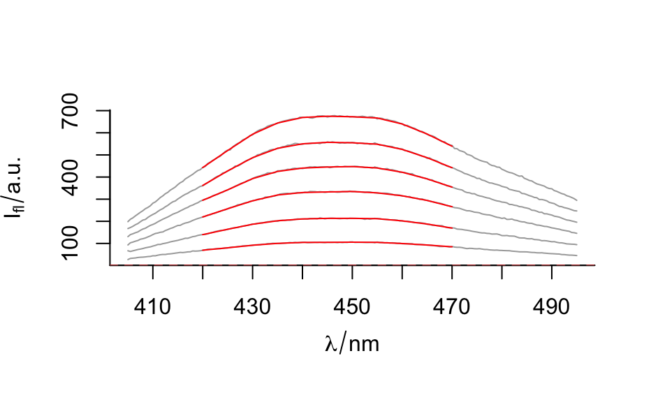

Spectra smoothing and interpolation on a new wavelength axis using
stats::loess().
spc_loess(spc, newx, enp.target = nwl(spc)/4, surface = "direct", ...)
| spc | The |
|---|---|
| newx | Wavelength axis to interpolate on. |
| enp.target, surface, ... | Further parameters for |
A new hyperSpec object.
Applying stats::loess() to each of the spectra, an interpolation onto a new
wavelength axis is performed. At the same time, the spectra are smoothed in
order to increase the signal to noise ratio. See stats::loess() and
stats::loess.control() on the parameters that control the amount of
smoothing.
C. Beleites
#> [1] 181#> [1] 11#> Warning: NAs were generated. Probably `newx` was outside the spectral range covered by `spc`.flu_na_smoothed[[]]#> 420 425 430 435 440 445 450 455 #> [1,] 69.37812 80.30948 91.84728 100.2360 104.5292 104.9064 105.7577 104.8149 #> [2,] 139.77571 164.01308 186.70646 202.3563 210.6401 213.3784 213.4778 211.8374 #> [3,] NA NA NA NA NA NA NA NA #> [4,] 294.90432 342.15512 392.92353 425.2415 440.4607 445.2538 447.5044 440.8911 #> [5,] 362.00455 427.75670 487.47455 529.7585 550.0944 556.9861 554.9146 548.4495 #> [6,] 442.89661 519.84822 593.45501 644.1054 669.0614 674.8410 672.3328 666.8127 #> 460 465 470 #> [1,] 99.62751 92.9669 84.80506 #> [2,] 201.97621 187.6462 169.38644 #> [3,] NA NA NA #> [4,] 421.76483 391.7258 354.35753 #> [5,] 524.96452 487.5104 441.95012 #> [6,] 639.70144 594.3875 539.25115